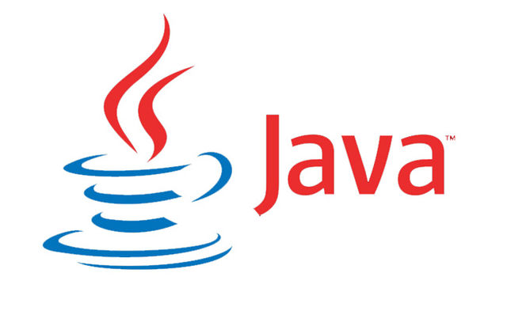
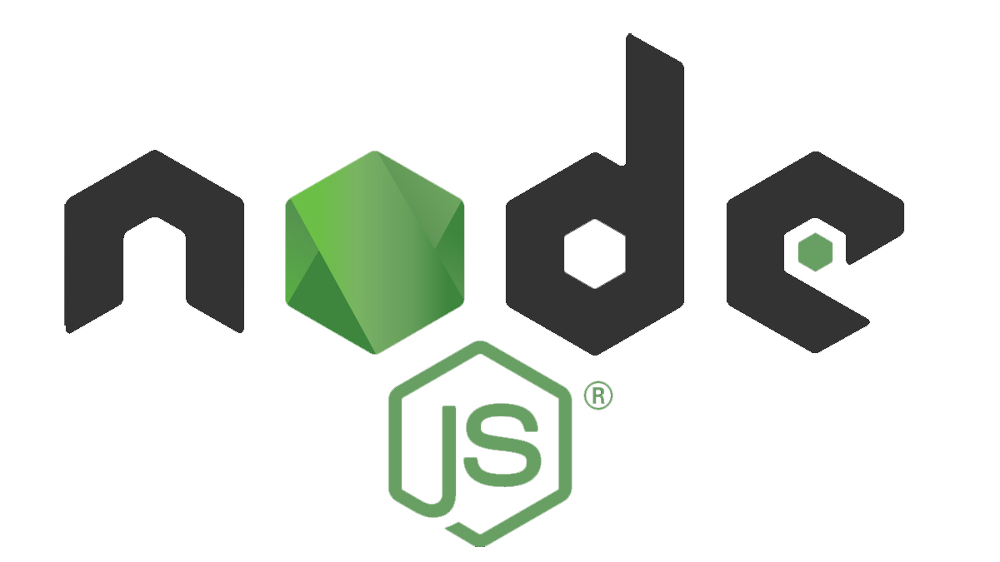
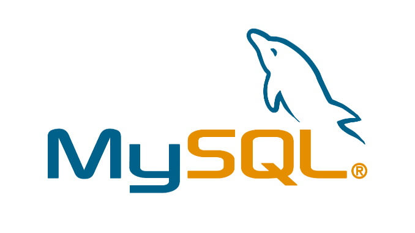
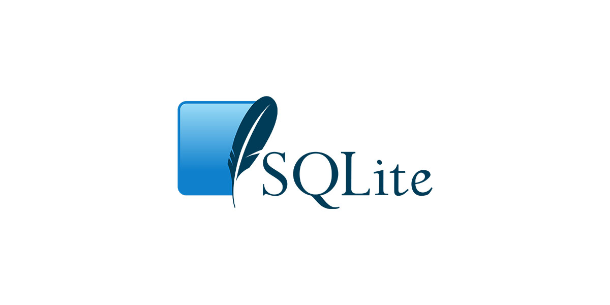
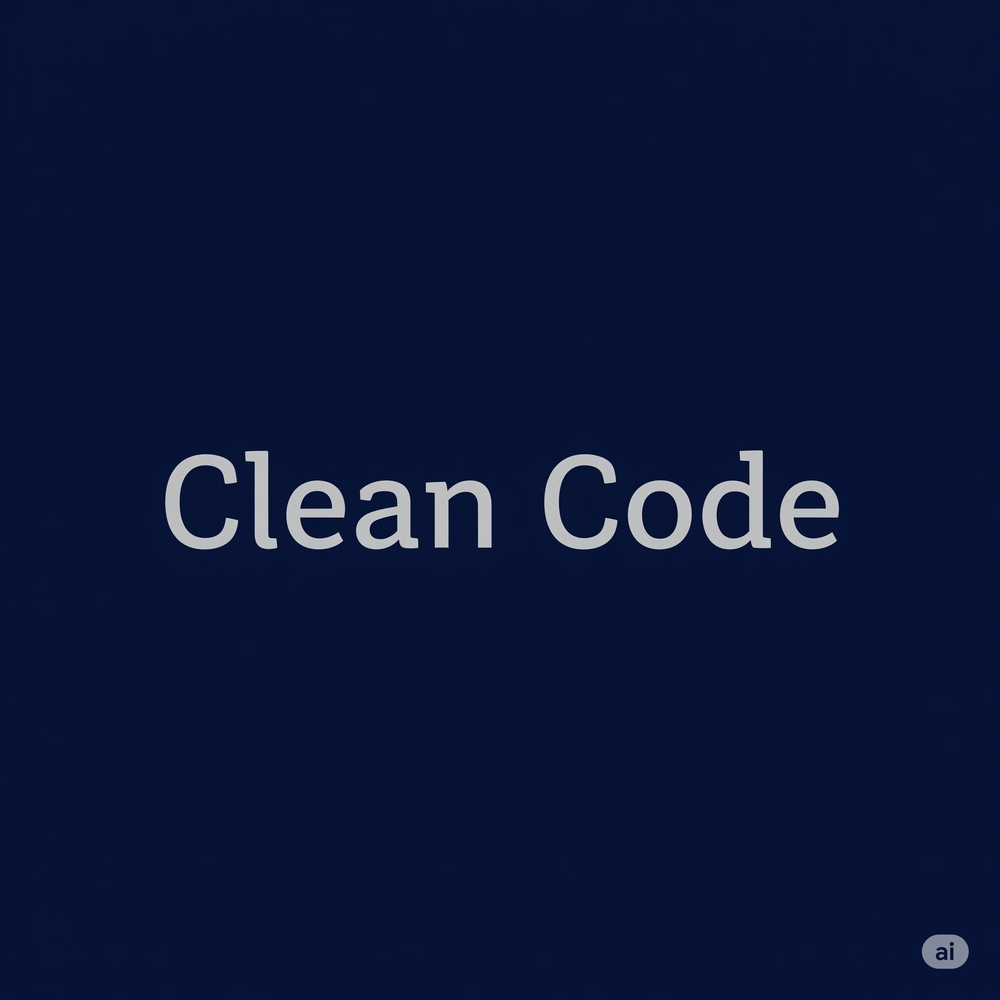
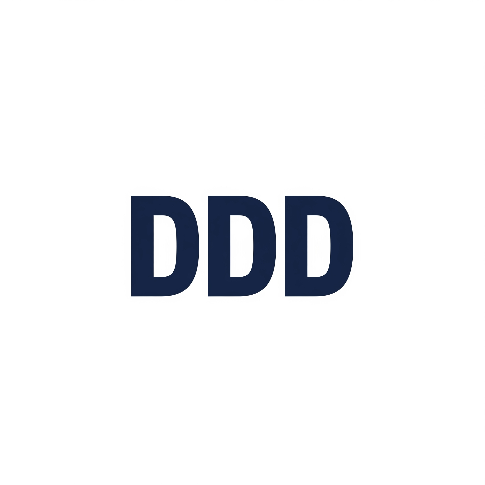
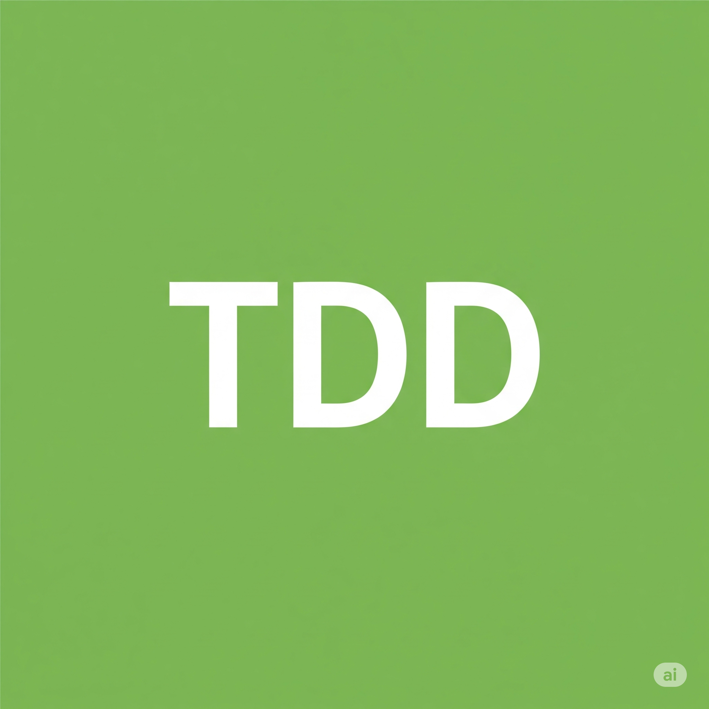
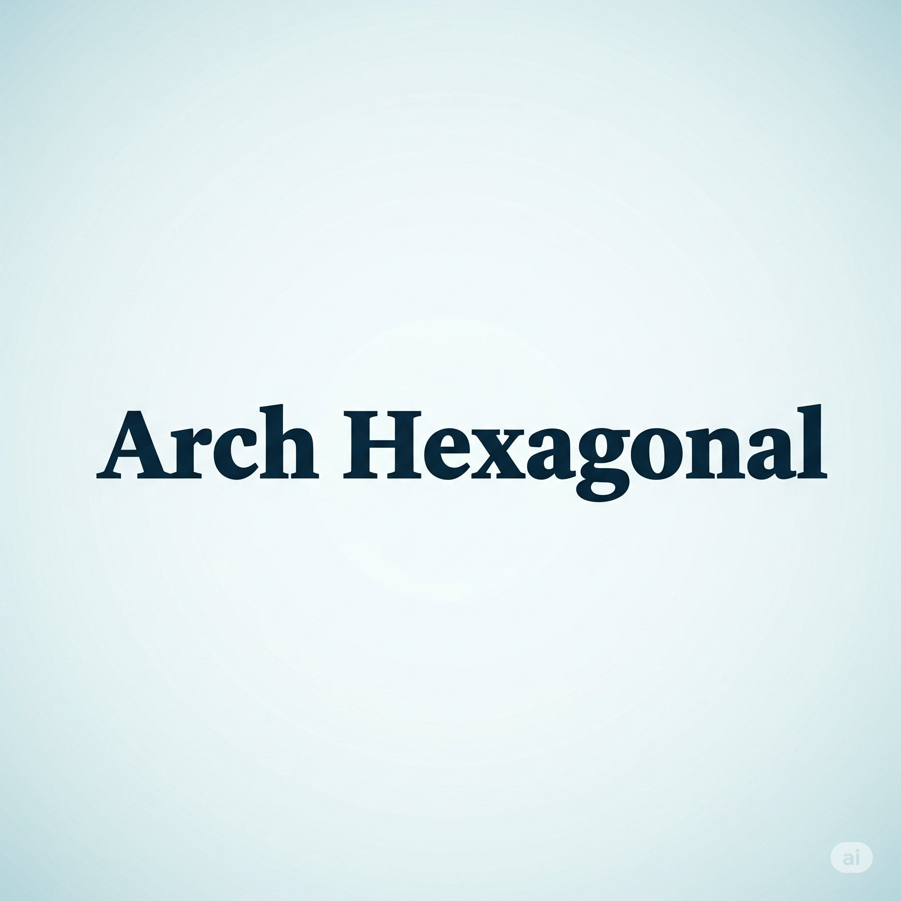
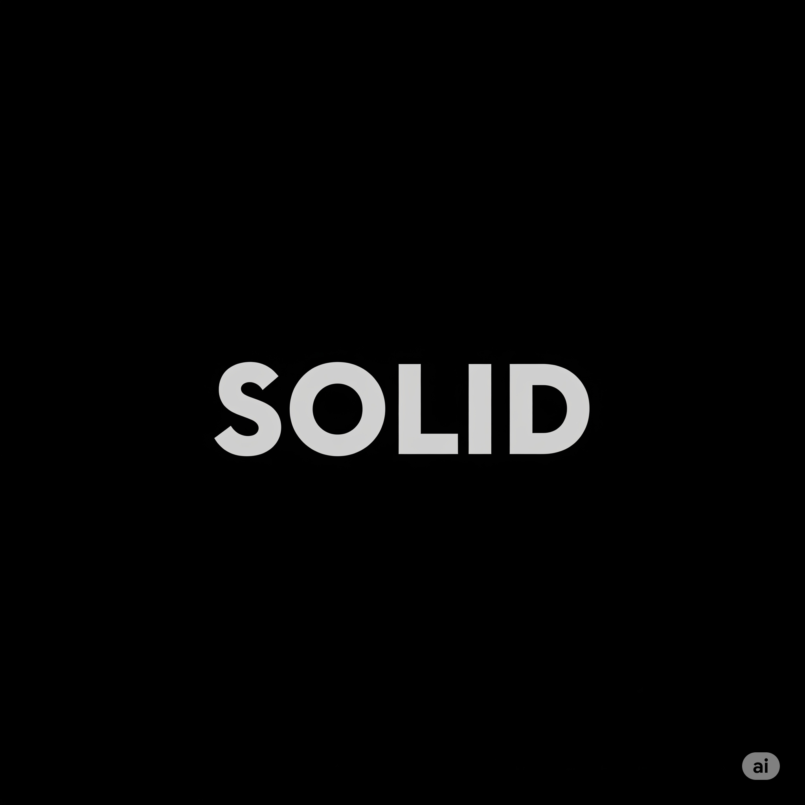
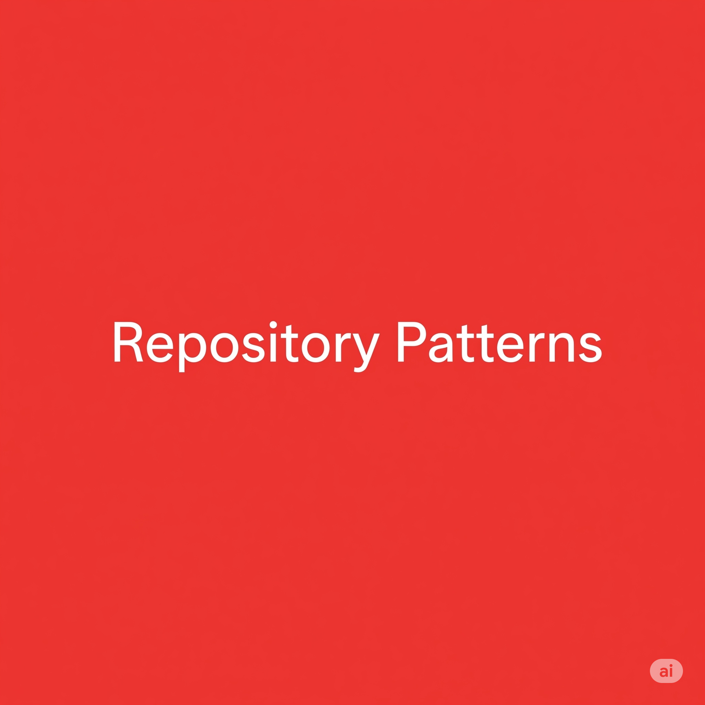

Matheus Gregorin
Seja bem vindo ao meu portifólio.
Me chamo Matheus Gregorin, sou um entusiasta de tecnologia com foco em desenvolvimento de software. Desde
2022, atuo profissionalmente como desenvolvedor back-end, sempre buscando evoluir minhas habilidades e
ampliar meu conhecimento na área. Tenho formação em Análise e Desenvolvimento de Sistemas pela SPTech
School, onde construí uma base sólida em lógica, arquitetura de sistemas e boas práticas de desenvolvimento.
Sou movido por desafios e motivado a aprender constantemente, o que me ajuda a me adaptar rapidamente a
diferentes projetos e equipes.
Tecnologias de conhecimento








Deslize para o lado
Continue para ver mais
Estatistícas do Desenvolvedor
Linguagens de Domínio:
0
Projetos Profissionais:
5
Projetos Pessoais:
0
Estrelas em Repositórios Pessoal:
0
Projetos Pessoais
{{ projectShow.name }}
Projeto: {{ projectShow.private ? "Privado" : "Público" }}
Linguagem: {{ projectShow.language ? projectShow.language : "Outros"}}
Quantidade de commits: {{ qtdCommits }}
Data de criação: {{ new
Date(projectShow.created_at).toLocaleString('pt-BR', {
year: 'numeric',
month: '2-digit',
day: '2-digit',
hour: '2-digit',
minute: '2-digit',
second: '2-digit',
hour12: false // Para usar formato 24h
}) }}
Última atualização: {{ new
Date(projectShow.pushed_at).toLocaleString('pt-BR', {
year: 'numeric',
month: '2-digit',
day: '2-digit',
hour: '2-digit',
minute: '2-digit',
second: '2-digit',
hour12: false // Para usar formato 24h
}) }}
Descrição:
{{ projectShow.description ? projectShow.description : "Sem Descrição"}}
Clique aqui para acessar
o
projeto
{{ name }}
Conceitos & Arquiteturas





